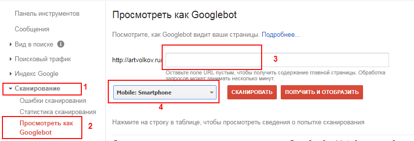

Mobile-first index: что нужно знать о новом алгоритме Google
Стационарные компьютеры все реже используются для поиска информации и онлайн покупок. На смену ПК пришли компактные и мобильные гаджеты – смартфоны. Для доставки пиццы или вызова такси пользователи преимущественно задействуют свои телефоны. Следовательно, поисковые роботы в большей степени лояльны к сайтам, которые предназначены для смартфонов, и фильтр Mobile-first будет использован для дальнейших поисков. Что представляет собой Mobile-first index? Этот вопрос мы детально рассмотрим ниже.
Немного истории
Mobile-first index появился не вчера. О нем стало известно в 2016 году. Именно в то время Google анонсировал выпуск алгоритма. В начале июля 2018 года сервис заработал полноценно и серьезно изменил результаты поисковой выдачи. На первых позициях оказались ресурсы, адаптированные под мобильные устройства.
Суть алгоритма
В первую очередь следует отметить, что Mobile first – не угроза и не повод для паники. Еще в недавнем прошлом Google лучше воспринимал стационарные варианты сайтов, поскольку речь шла о ранжировании и сканировании. Что же изменилось сейчас?
До засилья смартфонов владельцы этих девайсов, когда искали какую-либо информацию и отсылали запрос, получали результат на основе мобильного индекса. При отправке запросов с ПК, результат был десктопным соответственно.
В данный момент тип устройства, используемого для поиска, не имеет никакого значения. Мобильный индекс актуален как для телефонов, так и для ноутбуков или компьютеров.
Проще говоря, Mobile first разрабатывался как новый вариант получения результатов поиска. С его появлением два индекса не будут функционировать параллельно, а лишь только один алгоритм для всех версий веб ресурсов.
Комментарий от разработчиков
Представители Google заявили, что в настоящее время единственная версия индекса предназначается для обработки результатов. Мобильный индекс никак не отделен от основного варианта поиска.
Изменения также обусловлены и тем, что пользователи компьютеров и смартфонов получают разную информацию. Мобильные устройства – в приоритете. Логично, что все нововведения будут ориентированы на них.
Соответствие сайта новому сервису: как проверить работу алгоритма?
Mobile-first активно используется в течение нескольких месяцев, и значительная часть владельцев сайтов уже получили информацию в Search Console о переходе ресурса на мобильный индекс. Уведомление содержит фразу «mobile first indexing enabled for + имя сайта». После получения сообщения нужно протестировать ресурс на предмет оптимизации для смартфонов, и лучше сделать это с помощью Google mobile-friendly.
По итогам проверки станет ясно, оптимизирована ли страница для смартфонов или нет. Если все прошло успешно, сайт не будет иметь проблем с новым сервисом. В противном случае придется провести анализ того, как Googlebot реагирует на существующий мобильный вариант ресурса. Для этого следует выполнить следующие действия:
-
В Search console отыскать опцию «Посмотреть как Googlebot»
-
В разделе «Mobile: Smartphone» активировать функцию «Получить и отобразить»

После выполнения вышеуказанных манипуляций открываются 2 окна. Первый демонстрирует версию, доступную для обычных посетителей. Вторая же отображает вариант сайта «в глазах» Googlebot. Перечень страниц, к которым Googlebot «не достучался», прилагается.
Способы оптимизации сайта
Ресурс необходимо адаптировать для работы с mobile first index. В разделе Search Console следует найти опцию «Удобство просмотра на мобильных устройствах». Если ресурс не имеет проблем при просмотре на смартфонах, приходит соответствующее сообщение, равно как и при возникновении неполадок, выдается список недочетов и проблемных страниц.
Для проверки того, насколько быстро загружаются страницы, хорошо зарекомендовал себя сервис Google PageSpeed Insights. Когда страницы открываются без задержек, сайт попадает в зеленую зону. Красные и желтые поля заставляют задуматься и поработать над ресурсом дополнительно.
Можно ли отказаться от Mobile first?
Что произойдет, если сайт не будет соответствовать требованиям алгоритма? В любом случае, лидировать будут те сайты, которые оптимизированы под мобильные устройства. Безусловно, Google не будет игнорировать источники, содержимое которых представляет для него особый интерес, пусть даже такие ресурсы и не подчиняются правилам фильтра Mobile first index. Тем не менее, в число лидеров такие сайты не попадут. Действия, направленные на оптимизацию, предпринимать придется, иначе сайт утратит свои позиции. Это в свою очередь снизит посещаемость, следовательно, снизится и доход.
Как адаптировать сайт для смартфонов?
При наличии адаптивного дизайна и верстки или, как вариант, AMP-страниц, можно не беспокоиться вообще. Все дело в том, что процесс адаптации происходит автоматически. Дизайн приспосабливается под особенности устройства и комфортно просматривается посетителями.
Есть еще вариант - создать мобильную версию сайта. Потратив немного времени, можно привести ресурс в соответствие с новым алгоритмом. Есть три способа, как это сделать:
-
Использовать JavaScript
-
Настроить редирект с применением PHP-кода
-
Выполнить редирект посредством .htaccess
Без должного опыта и знаний приступать к выполнению одного из вышеуказанных способов не следует. Лучше обратиться к специалистам.
Условия для нормальной работы мобильной версии
Есть целый ряд нюансов, которые необходимы, чтобы мобильный вариант сайта работал как часы.
Правильно подобранный шрифт и размер кнопок
Размер решает все. Так, в мобильной версии 16 кегль считается оптимальным. Кнопки меню следует сделать большими для удобной навигации.
Большие фрагменты текста
Для того чтобы не выдавать на экран большой текст, а содержимое страницы хорошо просматривалось, используется кнопка «Подробнее».
Прокрутка большой страницы
На экране смартфона просмотр больших страниц допускается при наличии специальной прокрутки.
Картинки, иконки и списки
Увеличение картинки одним нажатием – лучшее решение, равно как и оформление меню в формате иконки, размещенной в верхнем углу слева.
Закажите адаптированный под алгоритмы Google сайт.